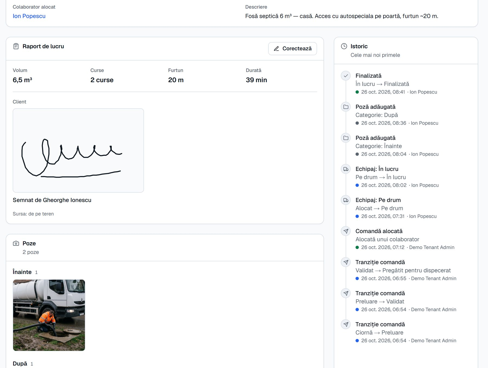

Vidanjarea, condusă de la un singur ecran.
EuroVid preia apelul, trimite echipajul potrivit și îți aduce înapoi raportul semnat de client: metri cubi, poze și ora exactă.
O lucrare, de la apel la semnătură.
Ce vezi mai jos sunt înregistrări din EuroVid, nu desene. Derulează și urmărește aceeași lucrare de-a lungul dimineții.
-
Dispecerul alege echipajul.
Fosa lui Gheorghe Ionescu din Ploiești apare pe hartă lângă echipajele libere. Un clic pe lucrare, unul pe echipaj, și Ion o vede pe telefon.
-
Echipajul pleacă.
Pe telefon are adresa, telefonul clientului și un singur buton mare cu pasul următor. „Plec spre client” și dispecerul știe că e pe drum.
-
Poze înainte și după.
Pozele se fac direct din aplicație, pe categorii, și se micșorează singure ca să urce și pe semnal slab.
-
Clientul semnează pe ecran.
Metri cubi, curse, lungimea furtunului, numele și semnătura clientului. Dacă pică semnalul, nimic din ce s-a scris nu se pierde.
-
La birou, raportul e deja acolo.
6,5 m³, două curse, 20 m de furtun, 39 de minute la fosă. Semnătura, pozele și fiecare oră, pe fișa clientului, gata de facturat.
Fiecare cursă lasă o urmă pe care o poți arăta.
Când clientul sună să întrebe ce s-a făcut, deschizi fișa: cine a fost, la ce oră a plecat, cât a vidanjat, cine a semnat. Aceleași date ajung pe factură.

Încearcă EuroVid pe datele firmei tale.
Îți pregătim un cont cu echipajele, autovidanjele și clienții tăi. În 30 de minute vezi cum ar arăta ziua de mâine.